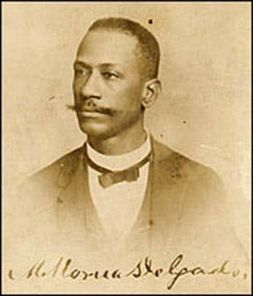
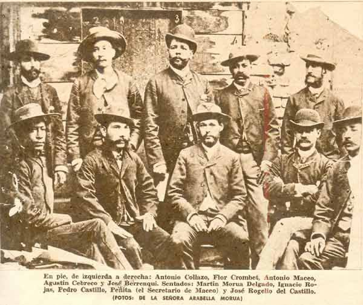
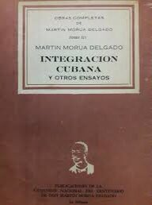
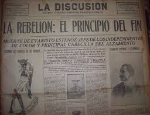
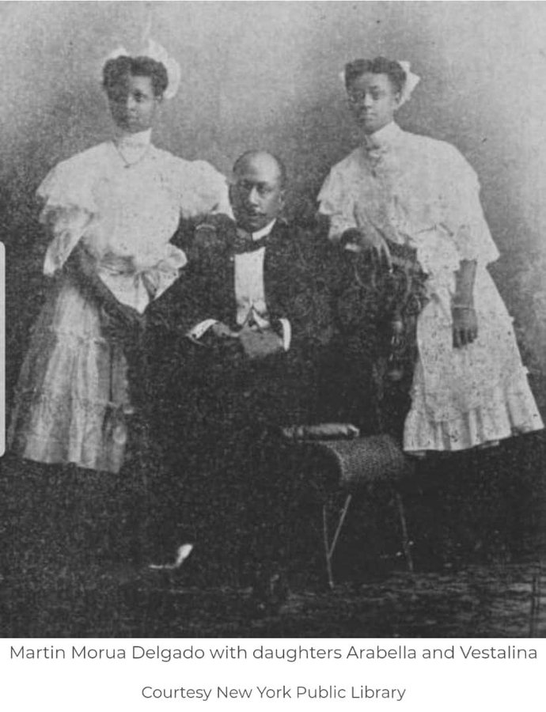
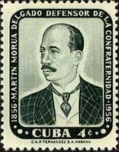
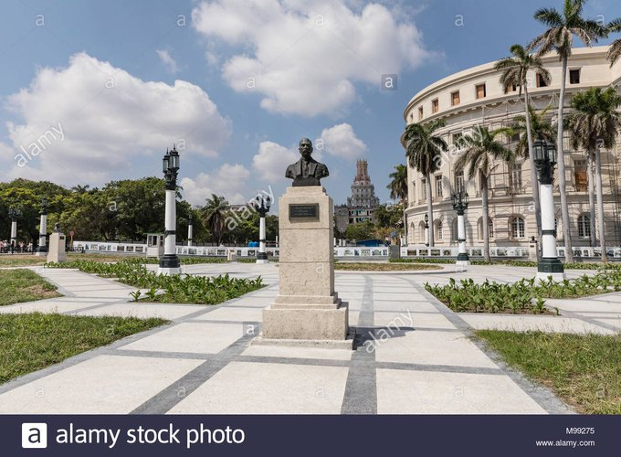

Los Hilos de Monik
Manuel Morúa Delgado
Publicado el 23 de junio de 2020 - 17 tweets - Hilo original en Twitter
1
La historia de las naciones es la de sus ciudadanos. Como ellos, está llena de polaridades.
Cuba tuvo su primer Senador negro en 1901, quien llegó a ser Presidente del Senado. Progre, ¿eh?
¿Y si te dijera que ese mismo Senador prohibió el Partido Independientes de Color?

2
Martín Morúa Delgado (1856-1910) fue hijo de una esclava con un español. Y un ejemplo de superación personal, pues se le considera un ilustrado autodidacta.
Periodista y escritor, vivió en EE.UU. por casi una década, tras exiliarse por su participación en la Guerra Chiquita.
3
Sus textos (como la novela “La familia Unzuazu”) abordaron las crueldades de la esclavitud y las relaciones sociales interraciales.
Fundó varios periódicos -Revista Popular es el más conocido- y se unió a la Guerra del 95 con la expedición del Gen. José Lacret Morlot.
4
Separatista, autonomista y luego liberal, Morúa fue una figura política de peso en la Cuba de posguerra:
- Uno de los dos hombres negros electos para la Asamblea Constitucional en la Ocupación
- Primer Senador negro de Cuba (1901)
- Primer Presidente negro del Senado (1909)
5
¿Exactamente qué ideales defendía Morúa?
¿Exactamente qué ideales defendía Morúa?
Fue un reformista liberal. Un político que abogaba por la educación como la única forma de mejorar el destino de Cuba, y opuesto a la violencia.
6
Su pensamiento político, para mi, se resume en esta frase:
Los negros reunidos (...) jamás alcanzarán de los gobiernos otra cosa que beneficios para los negros (...) Todo hay que obtenerlo como miembros de la sociedad cubana, y no como iniciativa de tal o cual raza.
7
No obstante, el propio Morúa en su texto "Factores sociales" discrimina entre la raza negra y la mestiza.
Por demás, sus ideas estaban influenciadas por la obra del pastor americano Williams, cuya tesis era que el negro necesitaba un tutelaje blanco para "civilizarse"
8
Lo interesante de su postura es que, en pos de la defensa de la igualdad racial, se opuso a los partidos políticos exclusivos de un color, por considerar que contribuían a la segregación.
Su legado, la Enmienda Morúa, es considerada como la incitadora de la rebelión de 1912.
9
¿Qué fue la Enmienda Morúa?
Tras la creación del Partido Independiente de Color (1908) Morúa presentó una propuesta de modificación a la Ley Electoral: un grupo de sujetos de una sola raza o color no se consideraba partido político con derecho a presentarse a elecciones.
10
Morúa defendió su propuesta diciendo que una organización política integrada exclusivamente por negros no sólo era excluyente, sino que creaba un precedente para la creación de organizaciones sólo de blancos.
La Enmienda Morúa fue aprobada en 1910.
11
Tras su paso por el Senado, Morúa se convirtió en Ministro de Agricultura, cargo que desempeñaba al morir en 1910 de una angina de pecho.
Por tanto, no vio como su enmienda resultó en la ejecución de 3 mil ciudadanos cubanos negros en la primavera de 1912.
¿Qué pasó?
12
Tras la ilegalización del Partido, este continuó su lucha por intentar derogar la enmienda.
El punto álgido llegó en febrero de 1912, cuando se reunieron con el presidente José Miguel Gómez, quien les dijo que sólo el Congreso podría modificar la ley.
13
El 20 de mayo de 1912 se produjo el levantamiento armado, mayormente en Las Villas y Oriente.
Un dato curioso: el responsable de sofocar la rebelión (por ende, sobre quien caen las muertes) fue el Ministro de Gobernación ... Gerardo Machado.
14
No pensemos que Morúa no sufrió discriminación racial.
En 1905 el Presidente Estrada Palma invitó a los senadores al Palacio Presidencial. Pero a tres de ellos -los senadores negros entre los que se contaba Morúa- se les dijo que no podían llevar a sus familiares.
15
En 1956, durante el gobierno de Batista, se celebró el centenario de su nacimiento.
El 11 de noviembre de ese año se declaró Fiesta Nacional y por un año se realizaron eventos conmemorativos (incluyendo uba emisión postal) patrocinados con un fondo de 100 mil pesos.
16
Les dejo dos frases de Morúa que me gustaron:
Un hombre instruido no puede ser un siervo que se subyuga; un hombre ilustrado es un hombre libre. Solo esto queremos. Nada se logrará si no se destruye la más terrible de las servidumbres; la servidumbre de la ignorancia
17
y:
El hombre libre empieza por reconocer y respetar la libertad de todos los hombres
¿Qué creen de la Enmienda Morúa? A mi me pareció un tema fascinante, sin una respuesta sencilla.
La historia no es en blanco y negro ... literalmente.